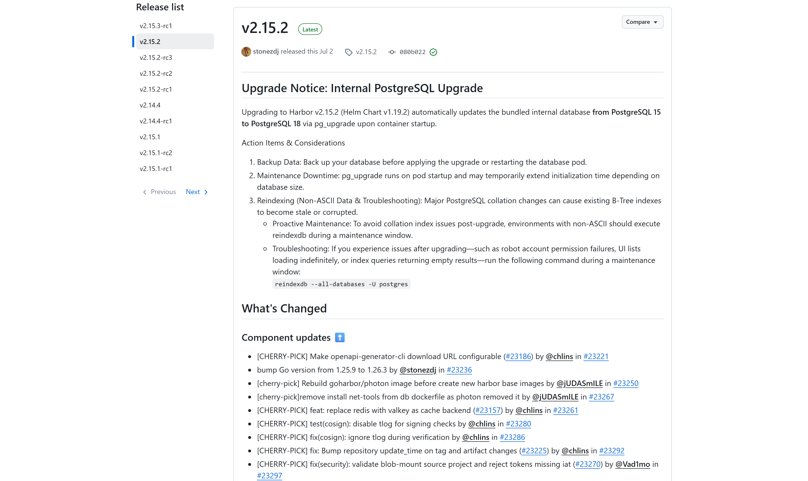
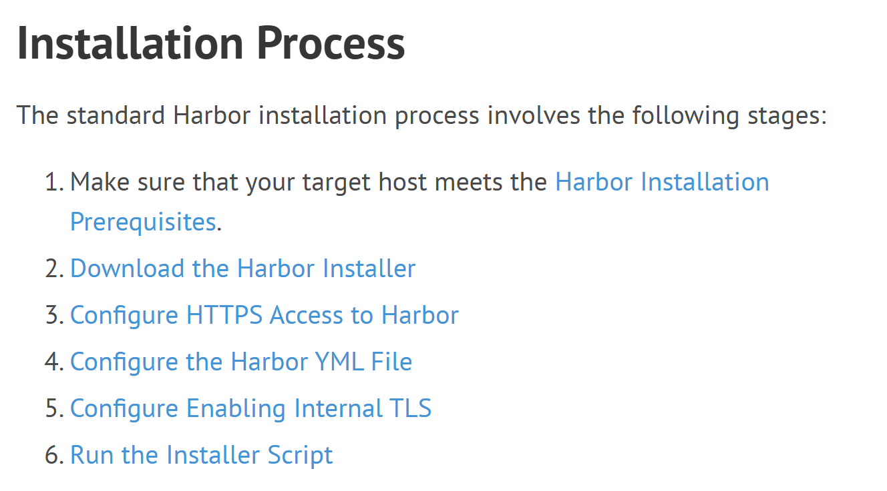
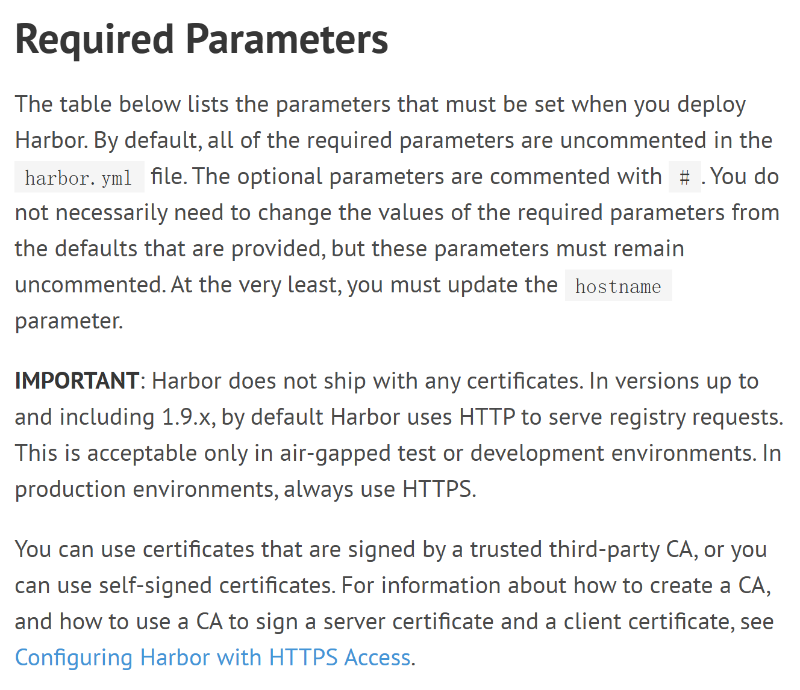
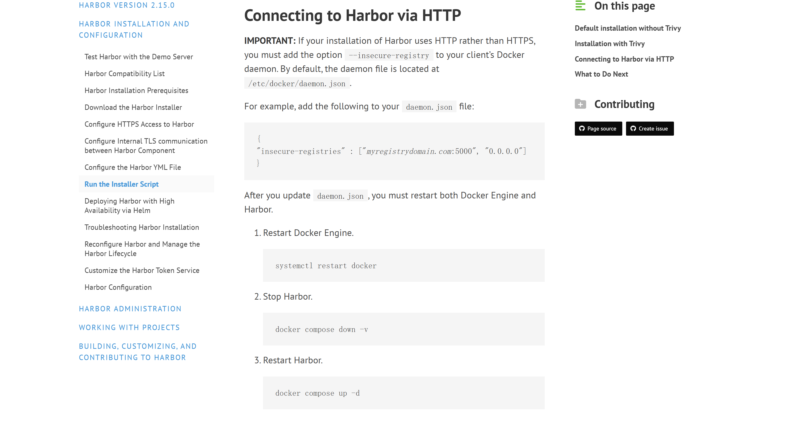

OSS PROJECT INTRO · HARBOR 系列第 2 期：快速上手
上一期我们认识了 Harbor——企业级云原生镜像管理中心：存储、扫描、签名、复制、权限五件事一个平台管，存储只是起点。这一期把认识变成动手。本期成果很具体：从官方安装包起一套 Harbor 全套服务（脚本背后就是一条 docker compose 命令）、登录一次管理控制台、推进仓库的第一张镜像，外加一套对照官方口径的跑通判定标准。全部命令逐条核对官方文档（goharbor.io 2.15 线 + v2.15.2 打包清单），HTTP 学习路线为主、HTTPS 生产口径单独立一条，跟着敲就能通。
sudo ./install.sh --with-trivy；insecure-registries 并重启 Docker，然后 login → tag → push 三步把第一张镜像推进去；Harbor 官方给的安装前置条件是一张明确的表（goharbor.io《Harbor Installation Prerequisites》，2026-09 核对）：
| 项目 | 最低 | 建议 |
|---|---|---|
| CPU | 2 核 | 4 核 |
| 内存 | 4 GB | 8 GB |
| 磁盘 | 40 GB | 160 GB |
| Docker Engine | Version > 20.10 | |
| Docker Compose | Version > 2.3（新版 Engine 自带） | |
两点提醒。其一，磁盘别抠：40 GB 是官方下限，镜像仓库的本分就是存东西，离线安装包自身也有 GB 级体量，建议按 160 GB 口径给。其二，"5 分钟装完"不等于"5 分钟资源"：Harbor 是十来个容器的全家桶（数据库、缓存、仓库、核心服务、日志各自独立），4 GB 内存是实打实的下限，内存不足容器会起来又挂。官方安装脚本面向 Linux 主机，需要 sudo 权限。

GitHub Releases：v2.15.2 标记 Latest（released Jul 2，即 2026-07-02 UTC）；左侧列表可见 2.15.3-rc1 预发布与 2.15.2-rc 系列，上方 Upgrade Notice 提示 v2.15.2 内置数据库升级事项（2026-09-20 截图）。本系列全部口径锚定 v2.15.2。安装包就挂在这个版本下面：harbor-offline-installer-v2.15.2.tgz（离线包）与 harbor-online-installer-v2.15.2.tgz（在线包），认准包名里的版本号下载就不会错。官方文档站（goharbor.io/docs/2.15.0/）按 2.15 线编写，命令口径一致。
官方《Download the Harbor Installer》对两种包的定位只有一句话的区别：离线包 contains pre-built images（内含预构建镜像），适合部署主机没有外网连接的场景；在线包安装时从 Docker Hub 拉取全部镜像，所以包体极小，安装流程两者几乎一样。
上手期我们选离线包，理由是反直觉但实在的：更大的包反而更稳——下载一次就断网能装，不撞上一期讲的 Docker Hub 匿名限流（每 IP 六小时 100 次），安装进度自己说了算；内网机器也一样能装。在线包省的是下载流量，赌的是安装那一刻的公网与限流状态，学习路线没必要赌。
# 包名带版本号，认准 Releases 页（2.15 线文档口径）
curl -O https://github.com/goharbor/harbor/releases/download/v2.15.2/harbor-offline-installer-v2.15.2.tgz
tar xzvf harbor-offline-installer-v2.15.2.tgz
cd harbor解压出一个 harbor 目录，关键两样：harbor.yml.tmpl（配置模板）和 install.sh（官方安装脚本）。容易踩的点：v2.15.2 打包清单里配置文件是带 .tmpl 后缀的模板（已按该 tag 的 Makefile 核对），要先复制一份再改：
cp harbor.yml.tmpl harbor.yml
官方《Installation and Configuration》总览页：标准安装过程六阶段——环境前置条件、下载安装包、配置 HTTPS、配置 harbor.yml、启用内部 TLS、运行安装脚本（2026-09-20 截图，只裁正文主栏）。本期逐阶段走，HTTPS 两阶段从简。官方对配置文件的原话是："At the very least, you must update the hostname parameter."——必改最小集只有 hostname 一项。它填部署主机的访问地址（IP 或域名），官方明令禁止 localhost、127.0.0.1、0.0.0.0，因为 registry 服务必须能被外部客户端访问。最小改动长这样（字段与默认值对照官方《Configure the Harbor YML File》，2.15 线）：
hostname: 192.168.1.10 # 本机 IP 或域名；禁用 localhost / 127.0.0.1
http:
port: 80 # 默认 80，被占用再改（如 8080）
# https 段：本期整段注释，走 HTTP 学习路线
harbor_admin_password: Harbor12345 # admin 初始密码，装完登录就改
data_volume: /data # 数据目录，升级重建不丢三点说明：HTTP 端口默认 80，被占用就换一个（官方页面对 http 端口的说明原文：Port number for HTTP, for both Harbor portal and Docker commands. The default is 80.）；https 段本期整段注释，走学习路线，生产口径见第 08 节；harbor_admin_password 是 admin 账号的初始密码，官方文档写明默认值 admin / Harbor12345——它只在首次启动生效，装完第一时间在界面改掉。

官方《Configure the Harbor YML File》Required Parameters 一节：At the very least, you must update the hostname parameter；IMPORTANT 段原文——HTTP 仅适用于隔离的测试或开发环境，生产环境始终用 HTTPS（2026-09-20 截图，只裁正文主栏）。sudo ./install.sh --with-trivy # 连漏洞扫描器一起装
# 不带参数 = 只装核心（官方默认不含 Trivy）
# 之后改了 harbor.yml，重新跑一遍脚本生效脚本背后就是一条 docker compose 命令：按顺序拉起 harbor-log、harbor-db（PostgreSQL）、harbor-redis、registry、harbor-core、harbor-portal、harbor-jobservice 这一串容器。装成功后脚本的最后一行回显（已对照 v2.15.2 tag 的 install.sh 原文）：
✔ ----Harbor has been installed and started successfully.----看到它，全套服务就起来了，浏览器打开你配置的 hostname 就能见到登录页。两个补充：--with-trivy 是官方推荐的加分项，把漏洞扫描器一起装上（上一期讲过 Clair 自 v2.2 起移出默认扫描器）；之后如果改了 harbor.yml，按官方 Reconfigure 流程重新执行一遍 install.sh 即可生效，不用拆掉重装。
浏览器打开 http://<你的 hostname>，用 admin / Harbor12345 登录（官方文档原话：the default administrator username and password are admin and Harbor12345）。首次登录两件事必须做：
project demo not found。HTTP 私仓有个前置动作。Docker 客户端默认只信 HTTPS，对 HTTP 仓库直接 login/push 会吃证书校验错误（经典的 x509 一族）。按官方《Run the Installer Script》Connecting to Harbor via HTTP 一节的口径：HTTP 安装必须给客户端的 Docker 守护进程加 --insecure-registry 选项，写进 /etc/docker/daemon.json：
# /etc/docker/daemon.json（客户端机器上改）
{ "insecure-registries": ["192.168.1.10"] }
# 官方三步生效（在 harbor 目录里执行后两步）：
sudo systemctl restart docker
docker compose down -v
docker compose up -d注意口径：改的是你敲 docker 命令的那台机器（开发机、CI 机），Harbor 服务端什么都不用动；官方文档同时提醒 insecure 只用于测试环境，生产请走 HTTPS。报备完成后登录：
docker login 192.168.1.10 -u admin
# Password: 输入你改过的新密码
# Login Succeeded
官方《Run the Installer Script》Connecting to Harbor via HTTP 一节：HTTP 安装必须给客户端 Docker 守护进程加 --insecure-registry 选项，daemon.json 样例原文在图中；更新后重启 Docker Engine 并按官方三步重启 Harbor（2026-09-20 截图，正文主栏）。docker pull hello-world:latest
docker tag hello-world:latest 192.168.1.10/demo/hello-world:latest
docker push 192.168.1.10/demo/hello-world:latest
# 推送回显（有节选）：
# The push refers to repository [192.168.1.10/demo/hello-world]
# latest: digest: sha256:… size: 525
# latest: pushed命令模式对照官方《Pulling and Pushing Images》：和推 Docker Hub 一字不差，只有地址变了——镜像名斜杠前是仓库地址，斜杠后第一段是项目名，这是 Docker 的命名规则，应用与脚本零改动。上一期讲的"协议兼容、换地址就能用"，这回亲手验证了。推送成功后回显一个 digest（内容摘要），刷新控制台，项目 demo 下面这个仓库和镜像 tag 已经在了；带了 --with-trivy 的话，点开镜像详情还能看到自动生成的漏洞扫描报告。
http://<hostname> 打开，admin 新密码登录成功——服务在跑；docker pull 成功——对外的拉取链路通；--with-trivy 安装时，镜像详情页自动生成漏洞报告——安全链路通。服务在跑只是前提，镜像存得进、看得到、拉得动、扫得出才是结果。以后装任何一套基础软件，都可以照这个思路先写判定、再动手装。
| 现象 | 原因与解法 |
|---|---|
push 报证书错误（x509 / HTTPS 握手失败） | HTTP 仓库客户端没报备——按第 08 节把仓库地址写进 insecure-registries 并重启 Docker；官方口径 insecure 仅用于测试环境 |
push unauthorized: authentication required | 没登录或密码错：先 docker login；镜像名第一段必须是已建项目，项目名写错也一样报未授权 |
| 80 / 443 端口被占，安装失败或起不来 | 装前改 harbor.yml 的 http.port（如 8080）；装后改端口按官方 Reconfigure 文档操作 |
push 被拒：denied 或超项目配额 | 项目设了存储配额：项目设置里调限额，或清掉旧镜像腾空间 |
project demo not found / unknown project | 项目没建或名字不一致：先在控制台建项目，镜像名里的项目段要一模一样 |
| 在线包安装卡在拉镜像 | 公网限流或网络抖动：停掉换离线包路线，装时不联网 |
本期主线走 HTTP，是因为安装器默认无证书、起步最快；但官方文档有一句必须划线的原话："In production environments, always use HTTPS."（IMPORTANT 段原文，上一节截图里可见）——HTTP 明文传输和自签证书都有中间人风险，insecure-registries 也被官方明确限定在测试场景。所以两条线要分清：
每题点击选项立即反馈 · 共 3 题
1. 按官方口径，harbor.yml 必改的最小配置集是什么？
2. 对 HTTP 私仓 docker login 报证书校验错误，第一步该做什么？
3. 下列哪组属于本期的"跑通判定"？
在线包把不确定性留在了安装那一刻：公网可达性、Docker Hub 限流（匿名每 IP 六小时 100 次）、镜像层下载的并发与断点，任何一环抖动都让安装卡在半路；离线包则把这套不确定性前置到了下载一次——包体大 1 GB，换来的是安装过程零外部依赖、可断点重来、可在完全隔离的内网复现。本质上这是"把变化的部分冻结、把不变的部分固化"：镜像集合在打包那一刻就定死了，装出来的环境天然一致。同款设计到处都是：Go/Rust 把依赖编译进单个静态二进制，Kubernetes 的 Helm chart 打包 values 与模板，Java 的 fat jar、Python 的 wheels 离线源、以及企业里"带安装介质进场"的传统交付包，都是同一个思路的变体。反过来它的代价也值得记：前置意味着牺牲时效——离线包里的镜像不会自动更新，安全补丁要靠重新下载整包，所以 Harbor 才保留了在线包给"想紧跟上游"的用户。选哪种，取决于你的环境里"网络确定性"和"版本时效性"哪个更稀缺。做自研工具交付时同理：先搞清楚用户环境里什么最不可控，就把什么前置掉。
HTTP 线省掉的每一环，都是生产上真实存在的攻击面。第一环是传输：HTTP 明文意味着登录凭据、镜像层在网络上可被窃听篡改——镜像供应链投毒的经典路径就是在传输中替换镜像层，HTTPS 的证书校验让"你连的确实是那台仓库"成立，中间人失去位置。第二环是客户端信任模型：insecure-registries 本质是"这个地址不验证书也放行"，它防不了任何主动攻击，只能证明"我们自己决定不设防"，所以官方把它限定在 air-gapped 测试/开发环境。第三环是身份与签名的地基：Harbor 的机器人账号、内容签名、Notation/cosign 验签链，都默认建立在传输可信之上——传输都不可信，签名验证的意义会被架空。最小改造清单（按官方文档顺序）：其一，按《Configure HTTPS Access to Harbor》签发证书（生产用 CA 签发，测试可自签），harbor.yml 打开 https 段填证书与私钥路径；其二，客户端撤掉 insecure-registries，改为把 CA 根证书装入系统信任库；其三，改掉 harbor_admin_password 与 database.password（官方对后者原话：生产部署必须修改）；其四，按官方建议给 data_volume 做持久化与备份规划，并重新跑 install.sh 应用全部变更。做完这四步，今天这套五分钟环境才算拿到进机房的资格。
带走这五句话：
sudo ./install.sh --with-trivy，脚本背后就是 docker compose 拉起全套容器；下期预告：Harbor 已经跑起来、第一张镜像也推上去了。下一期我们拆开看它的核心概念与整体架构——项目、制品、复制策略这些词逐一落到你今天亲手点过的界面上，再给一张仓库顶层模块地图。
Primary source：Harbor 官方文档 · Installation and Configuration（v2.15.0，与 v2.15.2 同线）——本期安装步骤、配置字段与 HTTP 口径均出自该文档：前置条件见 Installation Prerequisites，下载安装包见 Download the Harbor Installer，配置文件见 Configure the Harbor YML File，安装脚本与 HTTP 接入见 Run the Installer Script；版本与安装包见 GitHub Releases。